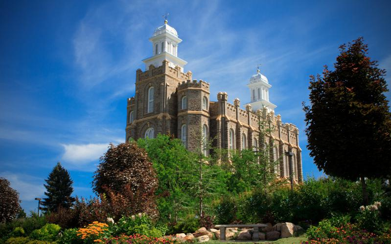

Temple Inn and Suites
Do you need to reserve a room while visiting the temple? We offer specialized accommodations and services for your stay. We offer long-term accommodations, wedding receptions, large group accommodations, and child care services. Reserve a place to stay today!
We offer you a place to stay when you are far from home and are enjoying the blessings of temple worship. We have accommodations to help you quickly change and a shuttle to deliver you to the front door of the temple. We can also help you research your family line and look for names as well as help you print family ordinance cards. If you are looking for a place to have a reception after a temple sealing, we have a beautiful area available and we can also help you with child care during the ceremony. Temple patrons that are looking for long-term accommodations are welcome as we have rooms with kitchenettes available. Visit your favorite temple and come and stay with us!
Logan Utah Temple
The Logan Utah Temple stands prominently on an elevated terrace - visible for miles throughout Utah's Cache Valley. Occupying an entire city block, the site features charming gardens and an oval reflecting pool on the east side and a huge grassy hill on the west. Just two blocks from the temple is the historic Logan Tabernacle, located on highly traveled Highway 91.
The Logan Utah Temple was the second dedicated temple in operation and was announced on October 6, 1876. The site was dedicated on May 18, 1877 by Orson Pratt and the temple was dedicated May 17, 1884 by President John Taylor. In 1976 the Logan Utah Temple was closed for over two years for a complete reconstruction of the interior and was rededicated March 13, 1979 by President Spencer W. Kimball. The Logan Utah Temple was the first temple built with progressive-style muraled ordinance rooms for live-acting presentation of the endowment ceremony which was replaced with equipment for motion-picture presentation of the endowment during the 1976-1979 reconstruction.
"There exists a righteous unity between the temple and the home. Understanding the eternal nature of the temple will draw you to your family; understanding the eternal nature of the family will draw you to the temple."Current Weather Conditions for
Logan, Utah
°F
Tomorrow °F
2nd day °F
3rd day °F
Wind Speed: N/A mph
Wind Chill: N/A °F